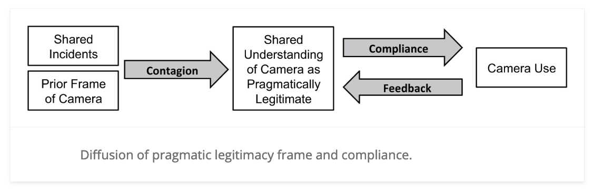
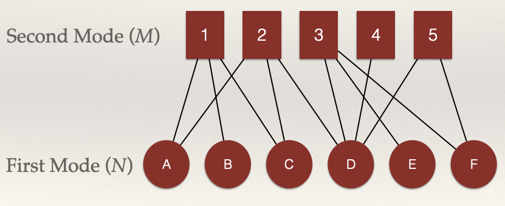
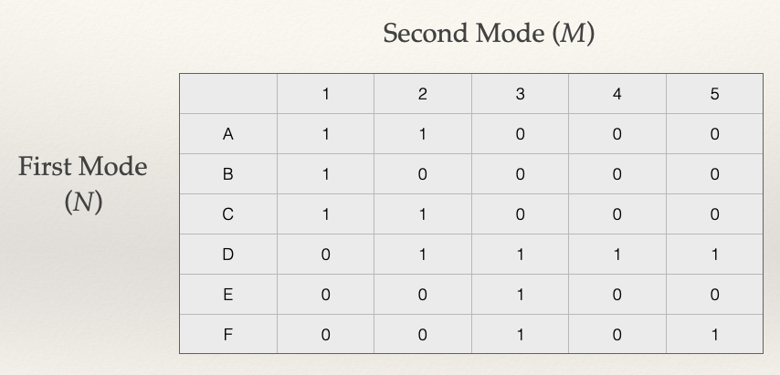
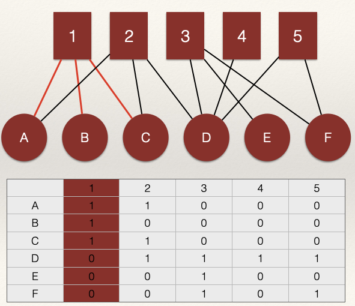
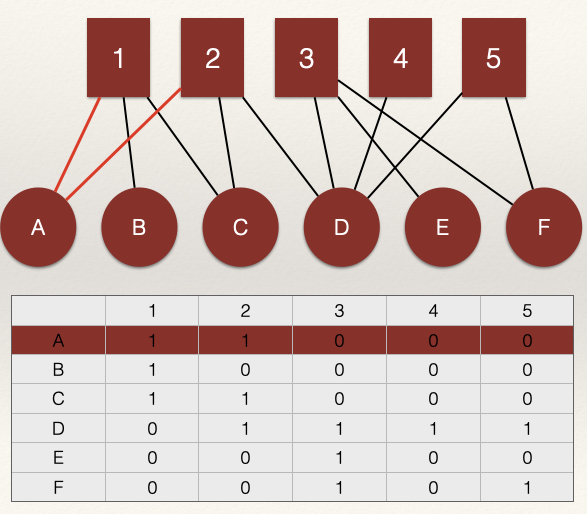
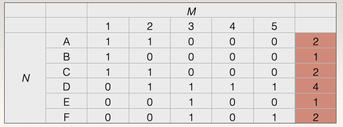
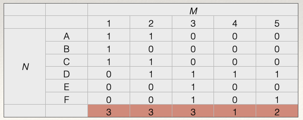

Bipartite Graphs/Two-Mode Networks
In the prior chapters, we have mainly focused our attention on networks that have a single set of nodes. As discussed in the introductory chapter, these sort of graphs are referred to as unipartite. This term means “one partition” and is in reference to the fact that there is only one partition of the node set. But, not all of the networks you encounter as a crime analyst will be unipartite (also called “one mode”). In fact, most of the data you will examine will be more complex in how it is structured.
But, not all of the networks we want to examine have a single node set. More complex relational structures have multiple partitions of node sets (i.e. n-mode). Bipartite graphs allow us to represent networks that have two partitions of nodes. In many instances, data are structured such that nodes come from two separate classes. Some examples include:
- Members of various groups
- Authors of papers
- Students in courses
- Participants in an event
In all these examples, there are not direct ties between the nodes. For example, students who attend the same courses are not connected directly through some tie like friendship. Rather, they are connected through their shared course taking. It is the courses that connect them.
In contrast to unipartite graphs, this is a very different way of conceptualizing and operationalizing social structure.
Bipartite Graphs: Notation
A bipartite graph has two partitions of nodes (called modes), and edges only occur between these partitions (i.e. not within). The definition of a bipartite graph is the following: \(G = (N,M,L)\) where \(G\) is the graph and is defined by:
- Node set \(N = \{n_1, n_2…, n_g\}\)
- Node set: \(M = \{m_1, m_2…, m_g\}\)
- Line/Edge set: \(L = \{l_1, l_2…, l_L\}\)
In this definition, there are \(N\) nodes in the first set, \(M\) nodes in the second set, and \(L\) lines/edges in the graph.
We can visualize an example as:

In this example, we can define all of pieces of the graph using our definition above:
- Node set \(N = \{n_A, n_B, n_C, n_D, n_E, n_F \}\)
- Node set: \(M = \{m_1, m_2, m_3, m_4, m_5 \}\)
- Line/Edge set: \(L = \{l_1, l_2…, l_{12} \}\)
Adjacency
As discussed in the Network Data Structures chapter, we define two nodes, \(n_i\) and \(n_j\) as adjacent if there is a link \(l_k = (n_i,n_j)\). We then went on to show that these data can be represented as an adjacency matrix, where each node is listed on the row and the column. The \(i_{th}\) row and the \(j_{th}\) column of \(X_{ij}\) records the value of a tie from i to j.
In bipartite graphs, we can also use an adjacency matrix. But, we have to represent the two different sets of nodes \(N\) and \(M\). we define two nodes from separate node sets, \(n_i\) and \(m_j\) as adjacent if there is a link \(l_k = (n_i,m_j)\). The \(i_{th}\) row and the \(j_{th}\) column of \(X_{ij}\) records the value of a tie from \(n_i\) to \(m_j\). Note the difference. That is, \(N\) (the first mode) is listed on the rows and \(M\) is listed on the columns of the adjacency matrix. As a consequence, the order of the matrix is \(N \times M\), meaning that it has \(N\) rows and \(M\) columns. Thus, if the number of nodes in \(N\) is not equal to the number of nodes in \(M\), we have a rectangular matrix (as opposed to a square matrix when the order is equal, as with unipartite graphs).
Let’s take our example network above and build the adjacency matrix:

Each column corresponds to the edges incident on a node, \(m_i\), from the set \(M\). The set of nodes \(M\) usually corresponds to an event, group, etc.

Each row corresponds to the edges incident on a node, \(n_j\), from the set \(N\). The set of nodes \(N\) usually corresponds to a person.

Here is a question: what does \(l_k = (n_i,n_i)\) represent in a unipartite graph? What does \(l_k = (n_i,m_i)\) represent in a bipartite graph?
In a unipartite graph, \(l_k = (n_i,n_i)\) would represent an edge from \(n_i\) to \(n_i\). This is called a loop and it represents a self-nomination. Recall from the chapter on unipartite data structures that we usually set these elements of the matrix to zero.
However, in a bipartite graph, \(l_k = (n_i,m_i)\) would represent an edge from \(n_i\) to \(m_i\). That is, a link between the ith row and the ith column. For example, in the graph above, the line \(l_k = (n_A,m_1)\) has a value 1 meaning that node A in the \(N\) node set is connected to node 1 in the \(M\) node set.
Bipartite Graphs: Properties
There are several approaches to examining bipartite graphs. Either we can keep the graph bipartite and examine the properties (as discussed below). Or, what is commonly done is that we project the graph to one mode (either N or M) and examine the properties. We will examine projection in the next chapter. Here, let’s see what properties we can describe for a biparite graph (i.e. a two-mode network).
As with unipartite graphs, we can describe the structure of the network in various ways. Examples:
- How dense is the graph? (Density)
- How are the edges distributed over nodes? (Degree Centrality)
- What is the average centrality score? (Mean Degree Centrality)
Density: Bipartite Graphs
The density of a bipartite graph is the number of edges observed \(L\), divided by the number of possible pairwise relations between the node sets \(N\) and \(M\). The number of possible connections between the nodes is \(N \times M\). Thus, the density is:
\[\frac{L}{N \times M}\]
What is the density of our example network?
First, calculate the number of edges \(L\). This is just the sum over the rows and columns of the matrix. In our example, \(L = 12\).
Second, we need to calculate the denominator. This is \(N \times M = 6 = 5 = 30\).
Therefore, our calculation for the density is:
\[\frac{L}{N \times M} = \frac{12}{6 \times 5}= \frac{12}{30} = 0.4\]
What does it mean to say that the density of the network is 0.4?
It tells us that 40% of the edges that could occur in the network did occur. In other words, 60% of the edges that could have occurred were not observed.
Degree Centrality: Bipartite Graphs
Recall from the Degree Centrality chapter that for an undirected graph there is one degree distribution and for a directed graph there are two degree distributions (i.e. indegree and outdegree). A bipartite graph also has two degree distributions:
- The distribution of ties over nodes in the first mode, \(N\)
- The distribution of ties over nodes in the second mode, \(M\)
We can calculate each degree using the adjacency matrix. The row sum for the adjacency matrix gives the degree centrality scores for the first mode, \(N\). The column sum for the adjacency matrix gives the degree centrality scores for the second mode, \(M\). Thus, we have:
- \(C_D(N_i) = \sum_j x_{ij}\) and
- \(C_D(M_i) = \sum_j x_{ji}\)
What are the degree centrality scores for our example network?
To get the scores for the nodes in \(N\), we calculate the row sums. For example, for node A in \(N\), we sum across the rows:
\(C_D(N_A) = \sum_j x_{A,j} = x_{A, 1} + x_{A, 2} + x_{A, 3} + x_{A, 4} + x_{A, 5} = 1 + 1 + 0 + 0 + 0 = 2\)
The degree centrality score for node A in \(N\) is 2. This means that A is connected to 2 nodes in \(M\).
Doing this for all the nodes we get:

To get the scores for the nodes in \(M\), we calculate the column sums. For example, for node 1 in \(M\), we sum across the columns:
\(C_D(M_1) = \sum_j x_{1,i} = x_{1, A} + x_{1, B} + x_{1, C} + x_{1, D} + x_{1, E} + x_{1, F} = 1 + 1 + 1 + 0 + 0 + 0 = 3\)
The degree centrality score for node 1 in \(M\) is 3. This means that 1 is connected to # nodes in \(N\).
Doing this for all the nodes we get:

Standardization
As discussed in all the chapters on centrality, centrality scores for each node set depend on the number of nodes in the graph. Larger networks will have a higher maximum possible degree centrality value simply because there are more nodes with whom to connect. Solution?
Standardize! (This should be an automatic response for you by now). As before, we need to adjust the raw degree centrality scores to produce a standardized degree centrality score. We can account for differences across networks by dividing each degree centrality score by the number of nodes in the opposite set:
- For \(N\), we divide by \(M\)
- For \(M\), we divide by \(N\)
This gives us:
- \(C'_D(N_i) = \dfrac{C_D(N_i)}{M}\) and
- \(C'_D(M_i) = \dfrac{C_D(M_i)}{N}\)
What are the standardized degree centrality scores for the nodes in \(N\)? All we need to do is divide \(C_D(N_i)\) by \(M\), which is 5.
For node A in \(N\), we have \(C'_D(N_A) = 2 / 5 = 0.4\). What does this score mean?
A standardized degree centrality score of 0.4 means that node A in \(N\) is connected to 40% of the nodes in \(M\).
Let’s finish standardizing the rest of the scores:
| Node | Raw | Standardized |
|---|---|---|
| A | 2 | 2 / 5 = 0.4 |
| B | 1 | 1 / 5 = 0.2 |
| C | 2 | 2 / 5 = 0.4 |
| D | 4 | 4 / 5 = 0.8 |
| E | 1 | 1 / 5 = 0.2 |
| F | 2 | 2 / 5 = 0.4 |
What are the standardized degree centrality scores for the nodes in \(M\)? All we need to do is divide \(C_D(M_i)\) by \(N\), which is 6.
For node 1 in \(M\), we have \(C'_D(M_1) = 3 / 6 = 0.5\). What does this score mean?
A standardized degree centrality score of 0.5 means that node 1 in \(M\) is connected to 50% of the nodes in \(N\).
Let’s finish standardizing the rest of the scores:
| Node | Raw | Standardized |
|---|---|---|
| 1 | 3 | 3 / 6 = 0.5 |
| 2 | 3 | 3 / 6 = 0.5 |
| 3 | 3 | 3 / 6 = 0.5 |
| 4 | 1 | 1 / 6 = 0.167 |
| 5 | 2 | 2 / 6 = 0.334 |
Mean Degree Centrality: Bipartite Graphs
As discussed in the Degree Centrality chapter, we can summarize degree centrality scores by taking the mean. This tells us, on average, how many edges are incident on a node and helps us get a sense of how connected the network is, overall. With bipartite graphs we can also do this, we simply calculate the mean degree for each node set:
- For the mean of \(N\), or \(\bar C_D(N)\), we divide by \(\frac{L}{N}\) and
- For the mean of \(M\), or \(\bar C_D(M)\), we divide by \(\frac{L}{M}\)
Note that for the mean we use the number of nodes in the corresponding node set. Above, when we standardized, we used the opposite node set. Just keep this in mind when doing the calculations.
What is the mean degree centrality score for each node set?
To do this we simply take the number of edges, \(L\), and divide by the corresponding size of the node sets. We know from our calculation of the density above that \(L = 12\). So, that gives us:
- \(\bar C_D(N) = 12 / 6 = 2\) and
- \(\bar C_D(M) = 12 / 5 = 2.4\)
What are we to make of these numbers? In the node set \(N\), the average degree centrality score is 2. In the node set \(M\), the average degree centrality score is 2.4.
Since we have two sets of nodes, we can compare the means. The average node in \(M\) has a higher degree than the average node in \(N\). This makes sense given that the edge count is the same. As a rule, in bipartite graphs, the node set with more nodes will have a higher mean degree.
Test your Knowledge
- What is the primary difference between unipartite and bipartite graphs? Provide an example of each.
- Why are bipartite graphs useful for representing certain types of data encountered by crime analysts?
- What are the two node sets in a bipartite graph?
- How does the adjacency matrix in a bipartite graph differ from the adjacency matrix of a unipartite graph?
- What does the density of a bipartite graph measure? Conceptually, what does the density describe?
- Consider a two-mode network with \(N = 12\), \(M = 10\), and \(L = 24\). Calculate the density of this bipartite graph.
- Explain how degree centrality is calculated for each node set in a bipartite graph.
- Suppose a node has a raw degree centrality score of 5. What does this value represent?
- What is the importance of standardizing degree centrality scores in bipartite graphs? How is this done for each node set?
Summary
This chapter introduced bipartite graphs (also called two-mode networks) as a way to represent relational structures involving two distinct node sets, such as people and events. Unlike unipartite graphs, which focus on a single set of nodes, bipartite graphs allow analysts to conceptualize and operationalize networks where ties exist only between nodes of different sets. Through examples like shared-incident networks among police officers, the chapter illustrated how interactions within these networks can influence attitudes and behaviors, such as the adoption and use of body-worn cameras. Key concepts we covered include representing bipartite networks using adjacency matrices, calculating metrics such as density and degree centrality, and understanding their implications. For crime analysts, mastering bipartite networks is essential for unraveling complex relational data, assessing connections between entities like suspects and criminal events, and gaining insights into the broader social structures influencing crime and enforcement outcomes. In the next chapter, we will examine projection, whereby we convert a bipartite graph into a unipartite graph. As we will see, after we project the two-mode network to a one-mode network, we can use the tools we have examined in past chapters.